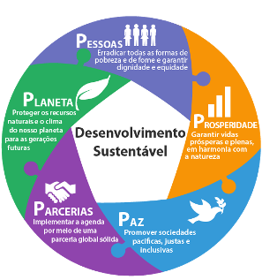
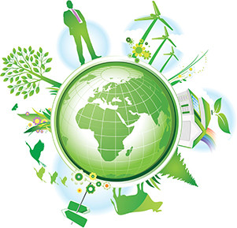
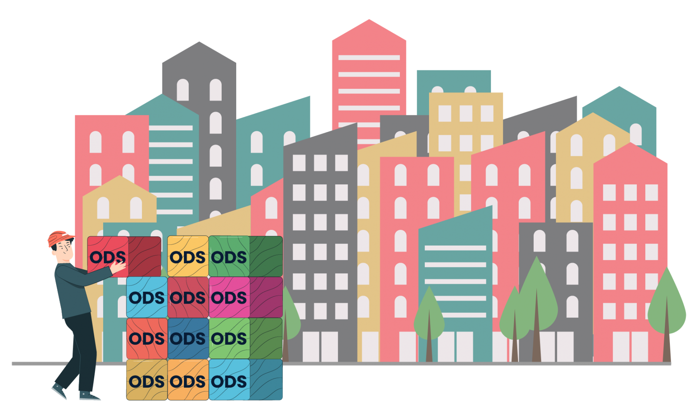
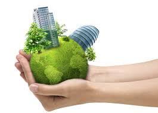

E algo que vem cada vez mais preocupando a sociedade e o governo de alguns países. A qualidade do ambiente em que vivemos tem reflexos diretos na qualidade de vida de cada um de nos, a falta de tratamento de esgotos, poluição do ar, a conservação das florestas, a extinção de animais, são assuntos extremamente preocupantes;
Diante das cobranças realizadas pela sociedade aos governantes, no sentido de preservar o nosso mundo e de manter as boas condições de habitabilidade para as gerações atuais e futuras, fez com que eles e as empresas dessem mais atenção a questão ambiental, mas essa mudança ainda e lenta e é fundamental a cobrança por parte da sociedade para que haja uma humanização das ações de governo com relação ao meio ambiente em que vivemos;
No Brasil, existem diversas leis que foram editadas com a finalidade de proteger o meio ambiente e as pessoas que nele vivem. O proposito maior e o desenvolvimento sustentável em nosso pais, que e um importante sitio natural em nível global. O Ministério do Meio Ambiente e o responsável por ações políticas e ambientais por meio da Lei de Crimes Ambientais, da Política Nacional de Recursos Hídricos e da Política Nacional da Educação Ambiental, entre outros.
No Brasil, existem diversas leis que foram editadas com a finalidade de proteger o meio ambiente e as pessoas que nele vivem. O proposito maior e o desenvolvimento sustentável em nosso pais, que e um importante sitio natural em nível global. O Ministério do Meio Ambiente e o responsável por ações políticas e ambientais por meio da Lei de Crimes Ambientais, da Política Nacional de Recursos Hídricos e da Política Nacional da Educação Ambiental, entre outros.
A SUSTENTABILIDADE

Não pode ser considerada apenas sob o aspectoambiental. Pois, os seres humanos, também fazem parte desse meio ambiente e dependemos dele. Nesse sentido, o aspecto social não pode ser desconsiderado.
Muito da degradação do nosso planeta se deve a falta de preocupação com o povo que o habita. Eimperioso que as pessoas possam viver com um mínimo de dignidade e segurança para que a sociedade, como um todo, não seja destruída, pelo Desemprego, fome, miséria, violência, abandono, degeneração humana, ausência de informações e conhecimentos.
Precisamos de mais políticas publicas que vão alem da questão exclusivamente ambientais. Precisa buscar o desenvolvimento sustentável da sociedade por meio de ações planejadas, de curto, médio e longo prazo.
GOVERNANÇA E PLANEJAMENTO DAS AÇÕES!

E preciso pensar no todo e não apenas em alguns segmentos;
O desenvolvimento sustentável deve ser buscado permanentemente por meio do crescimento econômico, do desenvolvimento social e da preservação do meio ambiente. Esses aspectos devem sempre estar interligados, pois um não se mantém sem o outro;
Para que o meio ambiente seja preservado, e preciso desenvolvimento social, o que não acontece sem crescimento econômico;
O que adianta construir uma grande usina, sem pensa nos prejuízos que ela pode causar ao meio ambiente e a populacao que vai continuar sofrendo com o desemprego, a pobreza, a falta de habitação e a fome? De nada adianta;
Conforme já vimos, a ONU entende que desenvolvimento sustentável é aqueleque procura satisfazer as necessidades da geração atual, sem comprometer a capacidade das gerações futuras de satisfazerem as suas próprias necessidades, significa possibilitar que as pessoas, agora e no futuro, atinjam um nível satisfatório de desenvolvimento social e econômico e de realização humana e cultural, fazendo, ao mesmo tempo, um uso razoável dos recursos da terra e preservando as espécies e os habitats naturais;
Como visto, a definição da ONU contempla os três aspectos que mencionamos: social, econômico e ambiental. Isso pode ser alcançado por intermédio de política econômica e social, por meio do seu podernormativo, de suas contratações, das ações sociais desenvolvidas, de normaspara proteção do meio ambiente e pela aplicação dos recursos à sua disposição de maneira eficaz e de acordo com os requisitos necessários aodesenvolvimento nacional sustentável.
OS SEUS TRÊS PILARES DA SUSTENTABILIDADE
A sustentabilidade deve levar em consideração questões muito mais amplas relacionadas com a qualidade devida das pessoas, o ambiente social em que vivem e suas necessidades econômicas básicas: emprego, saúde, segurança, renda etc. Sendo assim, podemos dizer que a sustentabilidade se sustenta em três pilares que veremos adiante:
1. DESENVOLVIMENTO SOCIAL SUSTENTÁVEL

Visa atender, as necessidades de todos os seres humanos. Contudo, as ações desustentabilidade de caráter social devem ser desenvolvidas para atingirobjetivos que beneficiem toda a população e não apenas uma parcela dela;
Nas regiões mais carentes devem ser priorizadas, principalmente no segmento da educação, geração de renda, segurança, cultura e a saúde, e não devem ser ignorados, nem tratados de forma genérica. Pois no contexto social, a educação e a geração de renda para as pessoas mais pobres devem ter um destaque especial, e acolhimento das empresas regionais e de pequeno porte. Os governantes devem proporcionar, através de políticas públicas, meios de incentivar estas empresas a aderirem de forma permanentes a programas que possam equilibrar o desenvolvimento social sustentável.
2. DESENVOLVIMENTO ECONÔMICO SUSTENTÁVEL

No Brasil, há um grande número detrabalhadores que prestam serviços para micro e pequenas empresas, muitas das quais estão localizadas em pequenas cidades e o fortalecimento delas permitirá que os habitantes dessas regiões consigam semanterna sua terra natal, fazendo com que o fluxo migratório para os grandescentros urbanos seja reduzido, evitando-se situações incontroláveis e indesejáveisdesuperpopulação, falta de segurança pública e dentre outras;
O desenvolvimento sustentável determina um conjunto de instrumentos preventivos ordenando as ações econômicas a fim de compatibilizá-las com a proteção do meio ambiente e da sociedade. Deste modo sempre existirão recursos necessários para o desenvolvimento e garantir um meio ambiente saudável, renovável, economicamente viável e socialmente justo.
3. PRESEVAÇÃO AMBIENTAL
Quando falamos em preservação ou conservação ambiental, logo fazemos uma associação com a degradação do meio ambiente. Poluição da natureza, extinção de animais, desmatamento, assoreamento de rios, tudo provocado pela ação do homem;
As empresas privadas, partes da população e alguns entes públicos procuram reduzir, ou controlar, os efeitos da economia sobre o meio ambiente gerando assim a compensação ambiental;
Compensação ambiental éum mecanismo legal que faz com que as empresas retornem e minimizem os impactos que podem ser causados no ambiente a partir de atividades utilizadoras de seus recursos, consideradas efetiva ou potencialmente poluidoras, bem como aquelas capazes de causar degradação ambiental;
Aos poucos, estão sendo implementadas medidas de preservação da natureza, que é essencial para que elas alcancem um bom resultado e sejam compreendidas pela população. Um exemplo é o plantio de árvores para compensar uma construção de um prédio residencial, por exemplo, mas só essas medidas não sãosuficientes para reparar o dano sofrido pelo meio ambiente. Então é preciso avançar, e fazer cada vez mais;
O crescimento econômico e o desenvolvimento social estão relacionados com a utilização de recursos naturais. A questão ambiental, nesse sentido, refere-se ao esforço de minimizar os efeitos negativos da utilização desses recursos sobre o meio ambiente, mas para que isso seja possível é preciso que as pessoas adquiram conhecimento e tenham acesso à informação;
O mais importante é que todos se envolvam nessa empreitada: governo, empresários, trabalhadores, pois o engajamento de todos é a única forma de se alcançar os resultados de que a sociedade e o meio ambiente tanto necessitam;
É preciso ressaltar que legislação adequada, ética, consistente no respeito à natureza, e educação são fatores essenciais para a proteção do meio ambiente;
Para que o processo seja eficaz, é necessário que cada um de nós, pratique ações simples para ajudar e preservar o meio ambiente, como por exemplos:
- Separar o lixo orgânico do reciclável;
- Evitar usar materiais descartáveis, como sacolas plásticas;
- Não desperdice água;
- Doar o que não usa mais;
- Não jogar lixo nas ruas. Muitos materiais levam anos para se decomporno ambiente natural;
- Denunciar ações danosas ao meio ambiente, etc.
O assunto avançou e, diante da necessidade de unir forças para enfrentar os principais desafios relacionados às questões sociais, econômicas e ambientais em todo o mundo, a ONU propôs a seus países-membros a criação da Agenda 2030, que levou em consideração a busca pelo alcance dos objetivos de desenvolvimento sustentável;
Para o cumprimento dos Objetivos de Desenvolvimento Sustentável - ODS, é preciso muita cooperação entre todos os interessados. Por isso mesmo é que os ODS também são conhecidos como Objetivos Globais, pois a mobilização de todos os países é fundamental para o sucesso da Agenda. Somente com uma mobilização em nível global é que será possível erradicar de vez a pobreza, proteger o meio ambiente de maneira eficaz e proporcionar melhores condições de vida para todos, sem qualquer tipo de distinção.